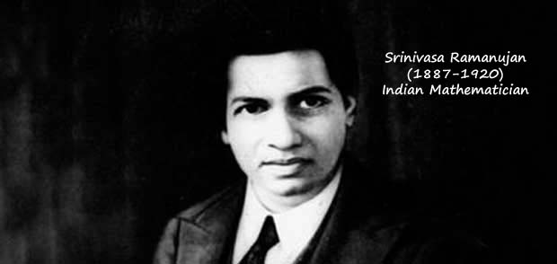

Srinivasa Ramanujan
The man of the infinite IQ

Indian mathematician who lived during the British Rule in India. Though he had almost no formal training in pure mathematics, he made substantial contributions to mathematical analysis, number theory, infinite series, and continued fractions, including
solutions to mathematical problems then considered unsolvable.
Here's a time line of Mr. Ramanujan:
- Born - 22 December 1887, Erode, Madras Presidency, British India
- Other Names - Srinivasa Ramanujan Aiyangar
- Citizenship - British Raj
- Education - Government Arts College (no degree) Pachaiyappa's College (no degree) Trinity College, Cambridge (Bachelor of Arts by Research, 1916)
-
Known for -
- Landau–Ramanujan constant
- Mock theta functions
- Ramanujan conjecture
- Ramanujan prime
- Ramanujan–Soldner constant
- Ramanujan's sum
- Ramanujan theta function
- Landau–Ramanujan constant
- Rogers–Ramanujan identities
- Ramanujan's master theorem
- Ramanujan–Sato series
- Died - 26 April 1920 (aged 32) Kumbakonam, Madras Presidency, British India.
"An equation for me has no meaning unless it expresses a thought of God."
-- Srinivasa Ramanujan